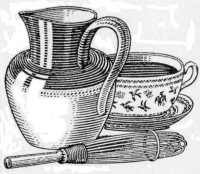

| Water | 9.30 |
| Fat | 3.83 |
| Mineral Matter | 8.20 |
| Albuminoids | 18.81 |
| Fibre | 13.85 |
| Digestible Carbohydrates | 46.01 |
| 100.00 |
From these figures Smetham calculates the food units as 102, so that it is evident that cacao shell occupies a good position when compared with other fodders:
| Linseed cake | 133 |
| Oatmeal | 117 |
| Bran | 109 |
| English wheat | 106 |
| Cacao shells | 102 |
| Maize (new crop) | 99 |
| Meadow hay | 68 |
| Rice husks | 43 |
| Wheat straw | 41 |
| Mangels | 12 |
These analytical results have been supported by practical feeding experiments in America and Germany (see full account in Zipperer's book, The Manufacture of Chocolate). Prof. Faelli, in Turin, obtained, by giving cacao shell to cows, an increase in both the quantity and quality of the milk. More recent experience seems to indicate that it is unwise to put a very high percentage of cacao shell in a cattle food; in small quantities in compound feeding cakes, etc., as an appetiser it has been used for years with good results. (Further particulars will be found in Cacao Shells as Fodder, by A.W. Knapp, Tropical Life, 1916, p. 154, and in The Separation and Uses of Cacao Shell, Society of Chemical Industry's Journal, 1918, 240). The price of shell has shown great variation. The following figures are for the grade of shell which is almost entirely free from cocoa:
| Year | 1912 | 1913 | 1914 | 1915 | 1916 | 1917 | 1918 | 1919 |
| Price | 65/- | 70/- | 70/- | 70/- | 90/- | 128/- | 284/- | 161/- |
| July, 1915. | Jan., 1919. | ||||
| s. | d. | s. | d. | ||
| English Oats | 3 | 1-1/2 | 3 | 8 | |
| Cotton Seed Cake | 2 | 5 | 3 | 11 | |
| Linseed Cake | 1 | 7 | 3 | 5 | |
| Brewers Grains (dried) | 1 | 6-1/2 | 3 | 8-1/2 | |
| Decorticated Cotton Cake | 1 | 6 | 3 | 3-1/2 | |
| Cacao Shell | 8-1/4 | 1 | 4-1/2 | ||
The above table speaks for itself; the figures are from the Journal of the Board of Agriculture; I have added cacao shell for comparison.
The early writers on chocolate generally became lyrical when they wrote of its value as a food. Thus in the Natural History of Chocolate, by R. Brookes (1730), we read that an ounce of chocolate contains as much nourishment as a pound of beef, that a woman and a child, and even a councillor, lived on chocolate alone for a long period, and further: "Before chocolate was known in Europe, good old wine was called the milk of old men; but this title is now applied with greater reason to chocolate, since its use has become so common, that it has been perceived that chocolate is, with respect to them, what milk is to infants."
A more temperate tone is shown in the following, from A Curious Treatise of the Nature and Quality of Chocolate, by Antonio Colmenero de Ledesma, a Spaniard, Physician and Chyrurgion of the city of Ecija, in Andaluzia (printed at the Green Dragon, 1685):
So much for the old valuations; let us now attempt by modern methods to estimate the food value of cacao and its preparations.
In estimating the worth of a food, it is usual to compare the fuel values. This peculiar method is adopted because the most important requirement in nutrition is that of giving energy for the work of the body, and a food may be thought of as being burnt up (oxidised) in the human machine in the production of heat and energy. The various food constituents serve in varying degrees as fuel to produce energy, and hence to judge of the food value it is necessary to know the chemical composition. Below we give the average composition of cacao beans and the fuel value calculated from these figures:
| Composition. | Energy-giving power Calories per lb. |
|||
| Cacao Butter | 54.0 | = | 2,282 | |
| Protein (total nitrogen 2.3%) | 11.9 | = | 221 | |
| Cacao Starch Other Digestible Carbohydrates, etc. |
6.7 18.7 |
} = | 472 | |
| Stimulants { | Theobromine Caffein |
1.0 0.4 |
||
| Mineral Matter | 3.2 | |||
| Crude Fibre | 2.6 | |||
| Moisture | 1.5 | |||
| 100.0 | 2,975 | |||
It will be seen from the above analysis that the cacao bean is rich in fats, carbohydrates and protein, and that it contains small quantities of the two stimulants, theobromine and caffein. In the whole range of animal and vegetable foodstuffs there are only one or two which exceed it in energy-giving power. If expressed in quite another way, namely, as "food units," the value of the cacao bean stands equally high, as is shown by the following figures taken from Smetham's result published in the Journal of the Royal Agricultural Society, 1914:
| "FOOD UNITS." | |
| Turnips | 8 |
| Carrots | 12 |
| Potatoes | 26 |
| Rice | 102 |
| Corn Flour | 104 |
| Wheat | 106 |
| Peas | 113 |
| Oatmeal | 117 |
| Coconut | 159 |
| Cacao Bean | 183 |
These figures indicate the high food value of the raw material; we will now proceed to consider the various products which are obtained from it.
| Composition. | Energy-giving power Calories per lb. |
|||
| Cacao Butter | 28.0 | = | 1,183 | |
| Protein | 18.3 | = | 340 | |
| Cacao Starch Other Digestible Carbohydrates, etc. |
10.2 28.4 |
} = | 718 | |
| Stimulants { | Theobromine Caffein |
1.5 0.6 |
||
| Mineral Matter | 5.0 | |||
| Crude Fibre | 4.0 | |||
| Moisture | 4.0 | |||
| 100.0 | 2,241 | |||
("Soluble" Cocoa, i.e., cocoa which has been treated with alkaline salts, is almost identical in composition, save that the mineral matter is about 7.5 per cent.).
As cocoa consists of the cacao bean with some of the butter extracted—a process which increases the percentage of the nitrogenous and carbohydrate constituents—it will be evident that the food value of cocoa powder is high, and that it is a concentrated foodstuff. In this respect it differs from tea and coffee, which have practically no food value; each of them, however, have special qualities of their own. Some of the claims made for these beverages are a little remarkable. The Embassy of the United Provinces in their address to the Emperor of China (Leyden, 1655), in mentioning the good properties of tea, wrote: "More especially it disintoxicates those that are fuddl'd, giving them new forces, and enabling them to go to it again." The Embassy do not state whether they speak from personal experience, but their admiration for tea is undoubted. Tea, coffee, and cocoa are amongst our blessings, each has its devotees, each has its peculiar delight: tea makes for cheerfulness, coffee makes for wit and wakefulness, and cocoa relieves the fatigued, and gives a comfortable feeling of satisfaction and stability. Of these three drinks cocoa alone can be considered as a food, and just as there are people whose digestion is deranged by tea, and some who sleep not a wink after drinking coffee, so there are some who find cocoa too feeding, especially in the summer-time. These sufferers from biliousness will think it curious that cocoa is habitually drunk in many hot climates, thus, in Spanish-speaking countries, it is the custom for the priest, after saying mass, to take a cup of chocolate. The pure cocoa powder is, as we saw above, a very rich foodstuff, but it must always be remembered that in a pint of cocoa only a small quantity, about half an ounce, is usually taken. In this connection the following comparison between tea, coffee and cocoa is not without interest. It is taken from the Farmer's Bulletin 249, an official publication of the United States Department of Agriculture:
| Kind of Beverage | Water | Protein | Fat | Carbohydrates | Fuel value per lb. |
| % | % | % | % | Calories | |
| Tea (0.5 oz. to 1 pt. water) |
99.5 | 0.2 | 0 | 0.6 | 15 |
| Coffee (1 oz. to 1 pt. water) |
98.9 | 0.2 | 0 | 0.7 | 16 |
| Cocoa (0.5 oz. to 1 pt. water) |
97.1 | 0.6 | 0.9 | 1.1 | 65 |
These figures place cocoa, as a food, head and shoulders above tea and coffee. The figures are for the beverages made without the addition of milk and sugar, both of which are almost invariably present. A pint of cocoa made with one-third milk, half an ounce of cocoa, and one ounce of sugar would have a fuel value of 320 calories, and is therefore equivalent in energy-giving power to a quarter of a pound of beef or four eggs.
Cocoa is stimulating, but its action is not so marked as that of tea or coffee, and hence it is more suitable for young children. Dr. Hutchison, an authority on dietetics, writes: "Tea and coffee are also harmful to the susceptible nervous system of the child, but cocoa, made with plenty of milk, may be allowed, though it should be regarded, like milk, as a food rather than a beverage properly so called."
 Tea, coffee and cocoa are all so easy to make that it is remarkable anyone should fail to prepare them perfectly. Whilst in France everyone can prepare coffee to perfection, and many fail in making a cup of tea, in England all are adepts in the art of tea-making, and many do not distinguish themselves in the preparation of coffee. Cocoa in either country is not always the delightful beverage it should be. The directions below, if carefully followed, will be found to give the character of cocoa its full expression. The principal conditions to observe are to avoid iron saucepans, to use boiling water or milk, to froth the cocoa before serving, and to serve steaming hot in thick cups.
The amount of cocoa required for two large breakfast cups, that is one pint, is as much as will go, when piled up, in a dessert spoon. Take then a heaped dessert-spoonful of pure cocoa and mix dry with one and a half times its bulk of fine sugar. Set this on one side whilst the boiling liquid is prepared. Mix one breakfast cup of water with one breakfast cup of milk, and raise to the boil in an enamelled saucepan. Whilst this is proceeding, warm the jug which is to hold the cocoa, and transfer the dry sugar-cocoa mixture to it. Now pour in the boiling milk and water. Transfer back to saucepan and boil for one minute. Whisk vigorously for a quarter of a minute. Serve without delay.
We have noted above the high percentage of nutrients which cocoa contains, and the research conducted by J. Forster[1] shows that these nutrients are easily assimilated. Forster found that the fatty and mineral constituents of cocoa are both completely digested, and the nitrogenous constituents are digested in the same proportion as in finest bread, and more completely than in bread of average quality. One very striking fact was revealed by his researches, namely, that the consumption of cocoa increases the digestive power for other foods which are taken at the same time, and that this increase is particularly evident with milk. Dr. R.O. Neumann[2] (who fed himself with cocoa preparations for over twelve weeks), whilst not agreeing with this conclusion, states that: "The consumption of cocoa from the point of view of health leaves nothing to be desired. The taking of large or small quantities of cocoa, either rich or poor in fat, with or without other food, gave rise to no digestive troubles during the 86 days which formed the duration of the experiments." He considers that cocoas containing a high percentage of cacao butter are preferable to those which contain low percentages, and that a 30 per cent. butter content meets all requirements. It is worthy of note that 28 to 30 per cent. is the quantity of butter found in ordinary high-class cocoas.
As experts are liable to disagree, and it is almost possible to prove anything by a judicious selection from their writings, it may be well to give an extract from some modern text book as more nearly expressing the standard opinion of the times. In Second Stage Hygiene, by Mr. Ikin and Dr. Lyster, a text book written for the Board of Education Syllabus, we read, p. 96: "... in the better cocoas the greater part of the fat is removed by heat and pressure. In this form cocoa may be looked upon as almost an ideal food, as it contains proteids, fats, and carbohydrates in roughly the right proportions. Prepared with milk and sugar it forms a highly nutritious and valuable stimulating beverage."
The mild stimulating property which cocoa possesses is due to the presence of the two substances, theobromine and caffein. The presence of theobromine is peculiar to cocoa, but caffein is a stimulating principle which also occurs in tea and coffee. Whilst in the quantities in which they are present in cocoa (about 1.5 per cent. of theobromine and 0.6 per cent. of caffein) they act only as agreeable stimulants, in the pure condition, as white crystalline powders, they are powerful curative agents. Caffein is well known as a specific for nervous headaches, and as a heart stimulant and diuretic. Theobromine is similar in action, but has the advantage for certain cases, that it has much less effect on the central nervous system, and for this reason it is a very valuable medicine for sufferers from heart dropsy, and as a tonic for senile heart. That its medicinal properties are appreciated is shown by its price: during 1918 the retail price was about 8 shillings an ounce, from which we can calculate that every pound of cocoa contained nearly two shillingsworth of theobromine.
Whilst Forster states that treated cocoa is the most digestible, experts are not in agreement as to which is the more valuable foodstuff, the pure untouched cocoa, or that which is treated during its manufacture with alkaline salts. The cocoa so treated is generally described as "soluble," although its only claim to this name is that the mineral salts in the cocoa are rendered more soluble by the treatment. It is also sometimes incorrectly described as containing alkali, but actually no alkali is present in the cocoa either in a free state or as carbonate; the potassium exists "in the form of phosphates or combinations of organic acids, that is to say, in the ideal form in which these bodies occur in foods of animal and vegetable origin" (Fritsch, Fabrication du Chocolat, p. 216).
Whilst the food value of cocoa powder is very high the drink prepared from it can only be regarded as an accessory food, because it is usual to take the powder in small quantities—just as with beef-tea it is usual to take only a small portion of an ox in a tea-cup—but chocolate is often eaten in considerable quantities at a time, and must therefore be regarded as an important foodstuff, and not considered, as it frequently is considered, simply as a luxury.
The eating of cacao mixed with sugar dates from very early days, but it is only in recent times that it has become the principal sweetmeat. What would a "sweetshop" be to-day without chocolate, that summit of the confectioner's art, when the rich brown of chocolate is the predominant note in every confectioner's window? What would the lovers in England do without chocolates, which enable them to indulge their delight in giving that which is sure to be well received?
As a luxury it is universally appreciated, and because of this appreciation its value as a food is sometimes overlooked.
During the war chocolate was valued as a compact foodstuff, which is easily preserved. Dr. Gastineau Earle, lecturing for the Institute of Hygiene in 1915 on "Food Factor in War," said: "Chocolate is a most valuable concentrated food, especially when other foods are not available; it is the chief constituent of the emergency ration." Its importance as a concentrated foodstuff was appreciated in the United States, for every "comfort kit" made up for the American soldiers fighting in the war contained a cake of sweet chocolate.
There are a number of records of people whose lives have been preserved by means of chocolate. One of the most recent was the case of Commander Stewart, who was torpedoed in H.M.S. "Cornwallis" in the Mediterranean in 1917. He happened to have in his cabin one of the boxes of chocolate presented to the Army and Navy in 1915 by the colonies of Trinidad, Grenada, and St. Lucia, who gave the cacao and paid English manufacturers to make it into chocolate. He had been treasuring the box as a souvenir, but being the only article of food available, he filled his pockets with the chocolate, which sustained him through many trying hours.[3]
We have already seen the high food value of the cacao bean: what of the sugar which chocolate contains? Sugar is consumed in large quantities in England, the consumption per head amounting to 80-90 lbs. per year. It is well known as a giver of heat and energy, and Sir Ernest Shackleton reports that it proved a great life preserver and sustainer in Arctic regions. Our practical acquaintance with sugar commences at birth—milk containing about 5 per cent. of milk sugar—and when one considers the amazing activity of young children one understands their continuous demand for sugar. Dr. Hutchison, in his well-known Food and the Principles of Dietetics, says: "The craving for sweets which children show is, no doubt, the natural expression of a physiological need, but they should be taken with, and not between, meals. Chocolate is one of the most wholesome and nutritious forms of such sweets."
Both the constituents of chocolate being nourishing, it follows that chocolate itself has a high food value. This is proved by the figures given below.
As with cocoa, we have first to know the composition before we can calculate the food value. The relative proportions of nib, butter and sugar, vary considerably in ordinary chocolate, so that it is difficult to give an average composition: there are sticks of eating chocolate which contain as little as 24 per cent. of cacao butter, whilst chocolate used for covering contains about 36 per cent. of butter.
As modern high-class eating chocolate contains about 31 per cent. of butter, we will take this for purposes of calculation:
| Composition. | Energy-giving power Calories per lb. |
|||
| Cacao Butter | 31.4 | = | 1,327 | |
| Protein (total nitrogen 78%) | 4.1 | = | 76 | |
| Cacao Starch Other Digestible Carbohydrates, etc. |
2.3 6.4 |
} = | 162 | |
| Stimulants { | Theobromine Caffein |
0.3 0.1 |
||
| Mineral Matter | 1.2 | |||
| Crude Fibre | 0.9 | |||
| Moisture | 1.o | |||
| Sugar | 52.3 | = | 973 | |
| 100.0 | 2,538 | |||
In Snyder's Human Foods (1916) the official analyses of 163 common foods are given. They include practically everything that human beings eat, and only three are greater than chocolate in energy-giving power.
The result (2,538 calories per lb.) which we obtain by calculation is lower than the figure (2,768 calories per lb.) for chocolate given by Sherman in his book on Food and Nutrition (1918). Probably his figure is for unsweetened chocolate. The table below shows the energy-giving value of cocoa and chocolate compared with well-known foodstuffs. The figures (save for "eating" chocolate) are taken from Sherman's book, and are calculated from the analyses given in Bulletin 28 of the United States Department of Agriculture:
| Foodstuff as Purchased. |
Calories per lb. |
| Cabbage | 121 |
| Cod Fish | 209 |
| Apples | 214 |
| Potatoes | 302 |
| Milk | 314 |
| Eggs | 594 |
| Beef Steak | 960 |
| Bread (average white) | 1,180 |
| Oatmeal | 1,811 |
| Sugar | 1,815 |
| Cocoa | 2,258 |
| Eating Chocolate | 2,538 |
The value of milk as a food is so generally recognised as to need no commendation here. When milk is evaporated to a dry solid, about 87.5 per cent. of water is driven off, so that the dry milk left has about eight times the food value of the original milk. Milk chocolate of good quality contains from 15 to 25 per cent. of milk solids. Milk chocolate varies greatly in composition, but for the purpose of calculating the food value, we may assume that about a quarter of a high-class milk chocolate consists of solid milk, and this is combined with about 40 per cent. of cane sugar and 35 per cent. of cacao butter and cacao mass.
| Energy-giving power. Calories per lb. |
|||
| Milk Fat and Cacao Butter | 35.0 | = | 1,480 |
| Milk and Cocoa Proteins | 8.0 | = | 149 |
| Cacao Starch and Digestible Carbohydrates | 3.0 | = | 56 |
| Stimulants (Theobromine and Caffein) | 0.2 | ||
| Mineral Matter | 2.0 | ||
| Crude Fibre | 0.3 | ||
| Moisture | 1.5 | ||
| Milk Sugar and Cane Sugar | 50.0 | = | 930 |
| 100.0 | = | 2,615 | |
It will be noted that the food value of milk chocolate is even greater than that of plain chocolate. It is highly probable that milk chocolate is the most nutritious of all sweetmeats. It is not generally recognised that when we purchase one pound of high-class milk chocolate we obtain three-quarters of a pound of chocolate and two pounds of milk!
Cocoa might conveniently be defined as consisting exclusively of shelled, roasted, finely-ground cacao beans, partially de-fatted, with or without a minute quantity of flavouring material.
The gross adulteration of cocoa is now a thing of the past, and most of the cocoa sold conforms with this definition. Statements, however, get copied from book to book, and hence we continue to read that cocoa usually contains arrowroot or other starch. In the old days this was frequently so, but now, owing to many legal actions by Public Health Authorities, this abuse has been stamped out. Nowadays if a Public Analyst finds flour or arrowroot in a sample bought as cocoa, he describes it as adulterated, and the seller is prosecuted and fined. Hence, save for the presence of cacao shell, the cocoa of the present day is a pure article consisting simply of roasted, finely-ground cacao beans partially de-fatted. The principal factors affecting the quality of the finished cocoa are the difference in the kind of cacao bean used, the amount of cacao butter extracted, the care in preparation, and the amount of cacao shell left in.
The presence of more than a small percentage of shell in cocoa is a disadvantage both on the ground of taste and of food value. This has been recognised from the earliest times (see quotations on p. 128). In the Cocoa Powder Order of 1918, the amount of shell which a cocoa powder might contain was defined—grade A not to contain more than two per cent. of shell, and grade B not more than five per cent. of shell. The manufacturers of high-class cocoa welcomed these standards, but unfortunately the known analytical methods are not delicate enough to estimate accurately such small quantities, so that any external check is difficult, and the purchaser has to trust to the honesty of the manufacturer. Hence it is wise to purchase cocoa only from makers of good repute.
We have so far no legal definition of chocolate in England. As Mr. N.P. Booth pointed out at the Seventh International Congress of Applied Chemistry: "At the present time a mixture of cocoa with sugar and starch cannot be sold as pure cocoa, but only as 'chocolate powder,' and with a definite declaration that the article is a mixture of cocoa and other ingredients. Prosecutions are constantly occurring where mixtures of foreign starch and sugar with cocoa have been sold as 'cocoa,' and it seems, therefore, a proper step to take to require that a similar declaration shall be made in the case of 'chocolate' which contains other constituents than the products of cocoa nib and sugar." We cannot do better than quote in full the definitions suggested in Mr. Booth's paper.
The author refers to the absence of any legal standard for chocolate in England, although in some of the European countries standards are in force, and points out, as a result of this, that articles of which the sale would be prohibited in some other countries, are permitted to come without restriction on to the English market.
WHARF AT FACTORY AT KNIGHTON, AT WHICH MILK IS EVAPORATED FOR MILK CHOCOLATE MANUFACTURE.
(Messrs. Cadbury Bros., Ltd.)
He suggests that the following definitions for chocolate goods are reasonable, and could be conformed to by makers of the genuine article. These standards are not more stringent than those already enforced in some of the Colonies and European countries:
(1) Unsweetened chocolate or cacao mass must be prepared exclusively from roasted, shelled, finely-ground cacao beans, with or without the addition of a small quantity of flavouring matter, and should not contain less than 45 per cent. of cacao butter.
(2) Sweetened chocolate or chocolate.—A preparation consisting exclusively of the products of roasted, shelled, finely-ground cacao beans, and not more than 65 per cent. of sugar, with or without a small quantity of harmless flavouring matter.
(3) Granulated, or Ground Chocolate for Drinking purposes.—The same definition as for sweetened chocolate should apply here, except that the proportion of sugar may be raised to not more than 75 per cent.
(4) Chocolate-covered Goods.—Various forms of confectionery covered with chocolate, the composition of the latter agreeing with the definition of sweetened chocolate.
(5) Milk Chocolate.—A preparation composed exclusively of roasted, shelled cacao beans, sugar, and not less than 15 per cent. of the dry solids of full-cream milk, with or without a small quantity of harmless flavouring matter.
Mr. Booth further states that starch other than that naturally present in the cacao bean, and cacao shell in powder form, should be absolutely excluded from any article which is to be sold under the name of "chocolate."
The war has caused such a disturbance that the statistics for the years of the war are difficult to obtain. For many years the German publication, the Gordian, was the most reliable source of cacao statistics, and so far we have nothing in England sufficiently comprehensive to replace it, although useful figures can be obtained from the Board of Trade returns of imports into Great Britain, from Mr. Theo. Vasmer's reports which appear from time to time in The Confectioners' Union and elsewhere, from Mr. Hamel Smith's collated material in Tropical Life, and from the reports of important brokers like Messrs. Woodhouse. In 1919 the Bulletin of the Imperial Institute gave a very complete résumé of cacao production as far as the British Empire is concerned.
Since 1830 the consumption of cacao in the British Isles has shown a great and continuous increase, and there is every reason to believe that the consumption will easily keep pace with the rapidly growing production. One effect of the war has been to increase the consumption of cocoa and chocolate. Many thousands of men who took no interest in "sweets" learned from the use of their emergency ration that chocolate was a very convenient and concentrated foodstuff.
| Year. | English Tons. |
|
| 1830 | 450 | |
| 1840 | 900 | |
| 1850 | 1,400 | |
| 1860 | 1,450 | |
| 1870 | 3,100 | |
| 1880 | 4,700 | |
| 1890 | 9,000 | |
| 1900 | 16,900 | |
| 1910 | 24,550 |
| Year. | Total Imported tons. |
Retained in the country tons. |
Home Consumption tons. |
| 1912 | 33,600 | 27,450 | 24,600 |
| 1913 | 35,000 | 28,200 | 23,200 |
| 1914 | 41,750 | 29,600 | 24,900 |
| 1915 | 81,800 | 54,400 | 40,300 |
| 1916 | 88,800 | 64,750 | 29,300 |
| 1917 | 57,900 | 53,100 | 41,300 |
The above figures are compiled from the Bulletin of the Imperial Institute (No. 1, 1919). The total imports for 1918 were 42,390 tons. This sudden and marked drop in the amount imported was due to shortage of shipping. There were, however, large quantities of cacao in stock, and the amount consumed showed a marked advance on previous years, being 61,252 tons.
The Board of Trade Returns for 1919 are as follow:
| From | |
| British West Africa | 72,886 tons |
| British West Indies | 13,219 tons |
| Ecuador | 9,153 tons |
| Brazil | 3,665 tons |
| Ceylon | 903 tons |
| Other Countries | 13,820 tons |
| Total | 113,646 tons |
| Home Consumption | 64,613 tons |
It will be noted that the import of British cacao is over 75 per cent. of the total.
Before the war about half the cacao imported into the United Kingdom was grown in British possessions. During the war more and more British cacao was imported, and now that a preferential duty of seven shillings per hundredweight has been given to British Colonial growths we shall probably see a still higher percentage of British cacao consumed in the United Kingdom.